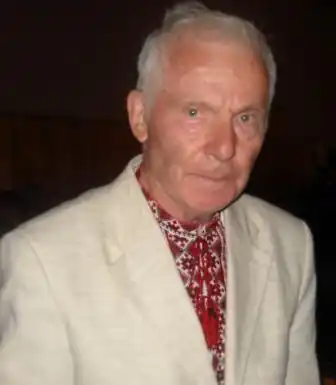

Микола Томенко народився 25 травня 1937 року в с. Ярославка Шполянського району, Черкаської області.
Український поет, прозаїк, драматург, публіцист, журналіст.
Батьки — одвічні хлібороби. Батько примусово мобілізований до сталінського війська і загинув на фронтах Другої світової війни, мати, виснажена каторжною працею в колгоспі, померла у віці 56 років. Ріс круглим сиротою. Після закінчення Антонівської середньої школи, працював на руднику "Гігант" у Кривому Розі, кріпильником та скреперистом. Служив на московському флоті — старшим тральним електриком на бойових мінних тральщиках Балтійського та Баренцевого морів. Закінчив Київський університет ім. Т.Шевченка (1966), філологічний факультет. Працював на журналістській та видавничій роботі (1964—2003) ("Політвидав України", "Дніпро", "Мистецтво", "Райдуга", "Сурмач" "Музична Україна", "Український письменник", "Наука і культура", у журналі "Дніпро", "Учитель", газеті "Чорнобильський вісник", "Вечірній Київ", "Урядовий кур'єр", " Профспілкові вісті", головним редактором журналу "Профспілки України", а також у Міністерстві культури України в репертуарно-редакційній колегії з драматургії (1994—1996). Микола Томенко — неперевершений майстер художнього слова, автор 25 книг поезій, прози, п'єс: "Дика груша" (1968), "Між берегами днів" (1972), "Червоні вершники" (1976), "Вишневий цвіт" (1981), "Дорога до хліба" (1985), "Сівба" (1989), "Поезії" (1989) "З трудової книжки матері" (1995), "Трагічні етюди" (2003), "Дика груша" (Вибране) (2006), "З трудової книжки матері" (у доповнених перевиданнях висувалась на Шевченківську премію 1995, 2003, 2006, 2011 роках), повість "Микола Трублаїні" (1989), "Дмитро Білоус" (1988), "Орел-Срібнокрилець" (1989) — книга п'єс для дітей, книг віршів для дітей "Стежинка" (1979) та "Кує зозуля з лугу". У 2003 році вийшла трилогія "Трудова книжка матері", у 2008 р. — тетралогія "Трудова книжка матері". Автор книг пісень "Білі птиці снігів" (2010) та "Поміж печалями й любов'ю" (2011). Компакт-диск пісень "Білі птиці снігів" із Золотого фонду Українського радіо побачив світ 2007 року. 2013 року вийшло в світ "Вибране" (850 ст.), Книга малої прози "Білі автографи" та книга про життя поета "Повертаюсь сьогодні до себе" побачили світ у 2017 році. У 2018 році вийшла книга п'єс для дітей "В очікуванні зоряного дива" (упорядкування дочки поета Олесі Томенко). Батько українського кінорежисера Тараса Томенка. В архіві письменника залишилися неопубліковані дитячі вірші, упорядковані ним у три книги та поезії різних років. Томенком-драматургом створено 11 віршованих п'єс для дітей та юнацтва. П'єса-казка "Орел-Срібнокрилець" — переможець Всеукраїнського конкурсу на найкращу п'єсу для дітей у 1978 р. та включена до шкільної програми 4 класу. П'єса "Жук-Скарабей і Скрипка" на Всесоюзному семінарі драматургів (м. Ялта, 1989) була визнана найкращою. У театрах ляльок України понад 20 років йшли п'єси Миколи Томенка для дітей. У 2013—2019 роках його вірші публікують дитячі журнали "Дзвіночок", "Пізнайко", "Ангелятко". Письменник часто виступав на українському радіо. З 1991—1995 рік звучав цикл передач "З трудової книжки матері", який набув широкого розголосу по всій Україні М. Томенко створив авторський радіосеріал "Трудова книжка матері" (26 серій у 2004—2005 рр.) на каналі "Культура". Лауреат Міжнародної премії ім. Гулака-Артемовського, ім. Василя Мисика (1996), ім. Д. Луценка (2010). Понад 60 пісень написані у співпраці з провідними композиторами України — І.Шамо, О.Білашем, А.Пашкевичем, К.Домінченим, В.Кирейком К.Мясковим, А.Гайденком, В.Дем'янишиним, Л.Височинською, Г.Володьком та ін. Записані пісні у виконанні: Раїси Кириченко, заслуженої капели бандуристів України, капели "Думка", ансамблю "Льонок", квартету "Явір", квартету "Кобза", тріо Мареничів, В. Білоножкоа, Ю. Рожкова, В. Шпортька, А. Мокренка, М. Гнатюка, Ауріки Ротару, О.Василенка, Л. Волянської (Канада), дуету "Росичі", Оксани Калінчук та інших українських та зарубіжних виконавців. Пісня "Червоні вершники" у складі циклу пісень О.Білаша — відзначена Шевченківською премією 1975 року і стала народною, її включають до репертуару більшість колективів та виконавців України та світу. Пісня "Дума про поле" — лауреат серед пісень про рідну землю; диплом за найкращу дитячу пісню: "Верталися гуси" (Всеукраїнський конкурс ім. В.Косенка, 1996); диплом 11 Міжнародного телерадіофестивалю "Прем'єра пісні" за пісню "Журавлиний клекіт" (2011). 2012 року відбувся літературно-мистецький вечір, присвячений 75-літтю поета у Будинку художника, у 2017 — творчий вечір до 80-ліття поета у Спілці письменників України. Микола Томенко — заслужений діяч мистецтв України, учасник бойових дій. Об'їздив всю Україну з пропагандою найкращих здобутків української літератури. На державному рівні представляв Україну в Казахстані до 150-річчя Ж. Жабаєва. Як заступник голови республіканської студії "Кобза" при видавництві "Молодь" виплекав цілу плеяду талановитої молоді (В.Герасим'юк, І.Римарук, С.Шевченко, Н.Поклад, А.Листопад, К.Вишинська, Н.Шаварська та ін.) У 2018 році Шполянській районній бібліотеці присвоєно ім"я Миколи Томенка та відкрито меморіальну дошку на фасаді будівлі. У тому ж 2018 році Шполянською районною радою та Національною спілкою письменникі України засновано всеукраїнську літературну премію імені Миколи Томенка, першими лауреатами якої стали у 2019 році Ігор Гургула (мала проза"Люди землі. Мапуче") та Андрій Демиденко ( книга поезій "Вибухають кульбаби") Внесок Миколи Томенка в українську культуру та літературу ХХ-ХХІ століть значущий. Помер 29 серпня 2017 року у Києві. Похований на Байковому цвинтарі.